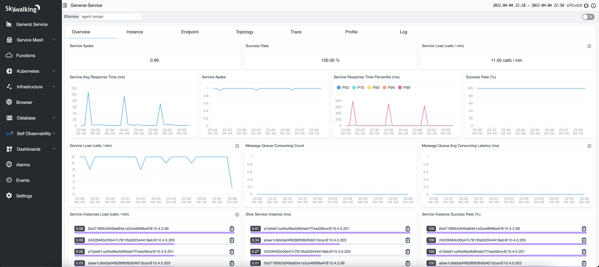

SkyWalking 9.0.0 is released. Go to downloads page to find release tars.
SkyWalking v9 is the next main stream of the OAP and UI.
Starting from v9, SkyWalking introduces the new core concept Layer. A layer represents an abstract framework in computer science, such as Operating System(OS_LINUX layer), Kubernetes(k8s layer). All detected instances belong to a layer to represent the running environment of this instance, the service would have one or multiple layer definitions according to its instances.
RocketBot UI has officially been replaced by the Booster UI.

Changes by Version
Project
- Upgrade log4j2 to 2.17.1 for CVE-2021-44228, CVE-2021-45046, CVE-2021-45105 and CVE-2021-44832. This CVE only effects
on JDK if JNDI is opened in default. Notice, using JVM option
-Dlog4j2.formatMsgNoLookups=trueor setting theLOG4J_FORMAT_MSG_NO_LOOKUPS=”true”environment variable also avoids CVEs. - Upgrade maven-wrapper to 3.1.0, maven to 3.8.4 for performance improvements and ARM more native support.
- Exclude unnecessary libs when building under JDK 9+.
- Migrate base Docker image to eclipse-temurin as adoptopenjdk is deprecated.
- Add E2E test under Java 17.
- Upgrade protoc to 3.19.2.
- Add Istio 1.13.1 to E2E test matrix for verification.
- Upgrade Apache parent pom version to 25.
- Use the plugin version defined by the Apache maven parent.
- Upgrade maven-dependency-plugin to 3.2.0.
- Upgrade maven-assembly-plugin to 3.3.0.
- Upgrade maven-failsafe-plugin to 2.22.2.
- Upgrade maven-surefire-plugin to 2.22.2.
- Upgrade maven-jar-plugin to 3.2.2.
- Upgrade maven-enforcer-plugin to 3.0.0.
- Upgrade maven-compiler-plugin to 3.10.0.
- Upgrade maven-resources-plugin to 3.2.0.
- Upgrade maven-source-plugin to 3.2.1.
- Update codeStyle.xml to fix incompatibility on M1’s IntelliJ IDEA 2021.3.2.
- Update frontend-maven-plugin to 1.12 and npm to 16.14.0 for booster UI build.
- Improve CI with the GHA new feature “run failed jobs”.
- Fix
./mvnw compilenot work if./mvnw installis not executed at least once. - Add
JD_PRESERVE_LINE_FEEDS=truein official code style file. - Upgrade OAP dependencies gson(2.9.0), guava(31.1), jackson(2.13.2), protobuf-java(3.18.4), commons-io(2.7), postgresql(42.3.3).
- Remove commons-pool and commons-dbcp from OAP dependencies(Not used before).
- Upgrade webapp dependencies gson(2.9.0), spring boot(2.6.6), jackson(2.13.2.2), spring cloud(2021.0.1), Apache httpclient(4.5.13).
OAP Server
- Fix potential NPE in OAL string match and a bug when right-hand-side variable includes double quotes.
- Bump up Armeria version to 1.14.1 to fix CVE.
- Polish ETCD cluster config environment variables.
- Add the analysis of metrics in Satellite MetricsService.
- Fix
Can't split endpoint id into 2 partsbug for endpoint ID. In the TCP in service mesh observability, endpoint name doesn’t exist in TCP traffic. - Upgrade H2 version to 2.0.206 to fix CVE-2021-23463 and GHSA-h376-j262-vhq6.
- Extend column name override mechanism working for
ValueColumnMetadata. - Introduce new concept
Layerand removedNodeType. More details refer to v9-version-upgrade. - Fix query sort metrics failure in H2 Storage.
- Bump up grpc to 1.43.2 and protobuf to 3.19.2 to fix CVE-2021-22569.
- Add source layer and dest layer to relation.
- Follow protocol grammar fix
GCPhrase -> GCPhase. - Set layer to mesh relation.
- Add
FAASto SpanLayer. - Adjust e2e case for V9 core.
- Support ZGC GC time and count metric collecting.
- Sync proto buffers files from upstream Envoy (Related to https://github.com/envoyproxy/envoy/pull/18955).
- Bump up GraphQL related dependencies to latest versions.
- Add
normalto V9 service meta query. - Support
scope=ALLcatalog for metrics. - Bump up H2 to 2.1.210 to fix CVE-2022-23221.
- E2E: Add
normalfield to Service. - Add FreeSql component ID(3017) of dotnet agent.
- E2E: verify OAP cluster model data aggregation.
- Fix
SelfRemoteClientself observing metrics. - Add env variables
SW_CLUSTER_INTERNAL_COM_HOSTandSW_CLUSTER_INTERNAL_COM_PORTfor cluster selectorszookeeper,consul,etcdandnacos. - Doc update:
configuration-vocabulary,backend-clusterabout env variablesSW_CLUSTER_INTERNAL_COM_HOSTandSW_CLUSTER_INTERNAL_COM_PORT. - Add Python MysqlClient component ID(7013) with mapping information.
- Support Java thread pool metrics analysis.
- Fix IoTDB Storage Option insert null index value.
- Set the default value of SW_STORAGE_IOTDB_SESSIONPOOL_SIZE to 8.
- Bump up iotdb-session to 0.12.4.
- Bump up PostgreSQL driver to fix CVE.
- Add Guava EventBus component ID(123) of Java agent.
- Add OpenFunction component ID(5013).
- Expose configuration
responseTimeoutof ES client. - Support datasource metric analysis.
- [Breaking Change] Keep the endpoint avg resp time meter name the same with others scope. (This may break 3rd party integration and existing alarm rule settings)
- Add Python FastAPI component ID(7014).
- Support all metrics from MAL engine in alarm core, including Prometheus, OC receiver, meter receiver.
- Allow updating non-metrics templates when structure changed.
- Set default connection timeout of ElasticSearch to 3000 milliseconds.
- Support ElasticSearch 8 and add it into E2E tests.
- Disable indexing for field
alarm_record.tags_raw_dataof binary type in ElasticSearch storage. - Fix Zipkin receiver wrong condition for decoding
gzip. - Add a new sampler (
possibility) in LAL. - Unify module name
receiver_zipkintoreceiver-zipkin, removereceiver_jaegerfromapplication.yaml. - Introduce the entity of Process type.
- Set the length of event#parameters to 2000.
- Limit the length of Event#parameters.
- Support large service/instance/networkAddressAlias list query by using ElasticSearch scrolling API,
add
metadataQueryBatchSizeto configure scrolling page size. - Change default value of
metadataQueryMaxSizefrom5000to10000 - Replace deprecated Armeria API
BasicToken.ofwithAuthToken.ofBasic. - Implement v9 UI template management protocol.
- Implement process metadata query protocol.
- Expose more ElasticSearch health check related logs to help to
diagnose
Health check fails. reason: No healthy endpoint. - Add source
eventgenerated metrics to SERVICE_CATALOG_NAME catalog. - [Breaking Change] Deprecate
Allfrom OAL source. - [Breaking Change] Remove
SRC_ALL: 'All'from OAL grammar tree. - Remove
all_heatmapandall_percentilemetrics. - Fix ElasticSearch normal index couldn’t apply mapping and update.
- Enhance DataCarrier#MultipleChannelsConsumer to add priority for the channels, which makes OAP server has a better performance to activate all analyzers on default.
- Activate
receiver-otel#enabledOcRulesreceiver withk8s-node,oap,vmrules on default. - Activate
satellite,spring-sleuthforagent-analyzer#meterAnalyzerActiveFileson default. - Activate
receiver-zabbixreceiver withagentrule on default. - Replace HTTP server (GraphQL, agent HTTP protocol) from Jetty with Armeria.
- [Breaking Change] Remove configuration
restAcceptorPriorityDelta(env var:SW_RECEIVER_SHARING_JETTY_DELTA,SW_CORE_REST_JETTY_DELTA). - [Breaking Change] Remove configuration
graphql/path(env var:SW_QUERY_GRAPHQL_PATH). - Add storage column attribute
indexOnly, support ElasticSearch only index and not store some fields. - Add
indexOnly=truetoSegmentRecord.tags,AlarmRecord.tags,AbstractLogRecord.tags, to reduce unnecessary storage. - [Breaking Change] Remove configuration
restMinThreads(env var:SW_CORE_REST_JETTY_MIN_THREADS,SW_RECEIVER_SHARING_JETTY_MIN_THREADS). - Refactor the core Builder mechanism, new storage plugin could implement their own converter and get rid of hard requirement of using HashMap to communicate between data object and database native structure.
- [Breaking Change] Break all existing 3rd-party storage extensions.
- Remove hard requirement of BASE64 encoding for binary field.
- Add complexity limitation for GraphQL query to avoid malicious query.
- Add
Column.shardingKeyIdxfor column definition for BanyanDB.
Sharding key is used to group time series data per metric of one entity in one place (same sharding and/or same
row for column-oriented database).
For example,
ServiceA's traffic gauge, service call per minute, includes following timestamp values, then it should be sharded by service ID
[ServiceA(encoded ID): 01-28 18:30 values-1, 01-28 18:31 values-2, 01-28 18:32 values-3, 01-28 18:32 values-4]
BanyanDB is the 1st storage implementation supporting this. It would make continuous time series metrics stored closely and compressed better.
NOTICE, this sharding concept is NOT just for splitting data into different database instances or physical files.
- Support ElasticSearch template mappings
properties parametersand_sourceupdate. - Implement the eBPF profiling query and data collect protocol.
- [Breaking Change] Remove Deprecated responseCode from sources, including Service, ServiceInstance, Endpoint
- Enhance endpoint dependency analysis to support cross threads cases. Refactor span analysis code structures.
- Remove
isNotNormalservice requirement when use alias to merge service topology from client side. All RPCs’ peer services from client side are always normal services. This cause the topology is not merged correctly. - Fix event type of export data is incorrect, it was
EventType.TOTALalways. - Reduce redundancy ThreadLocal in MAL core. Improve MAL performance.
- Trim tag’s key and value in log query.
- Refactor IoTDB storage plugin, add IoTDBDataConverter and fix ModifyCollectionInEnhancedForLoop bug.
- Bump up iotdb-session to 0.12.5.
- Fix the configuration of
AggregationandGC Countmetrics for oap self observability - E2E: Add verify OAP eBPF Profiling.
- Let
multiGetcould query without tag value in theInfluxDBstorage plugin. - Adjust MAL for V9, remove some groups, add a new Service function for the custom delimiter.
- Add service catalog
DatabaseSlowStatement. - Add
Error Prone Annotationsdependency to suppress warnings, which are not errors.
UI
- [Breaking Change] Introduce Booster UI, remove RocketBot UI.
- [Breaking Change] UI Templates have been redesigned totally. GraphQL query is minimal compatible for metadata and metrics query.
- Remove unused jars (log4j-api.jar) in classpath.
- Bump up netty version to fix CVE.
- Add Database Connection pool metric.
- Re-implement UI template initialization for Booster UI.
- Add environment variable
SW_ENABLE_UPDATE_UI_TEMPLATEto control user edit UI template. - Add the Self Observability template of the SkyWalking Satellite.
- Add the template of OpenFunction observability.
Documentation
- Reconstruction doc menu for v9.
- Update backend-alarm.md doc, support op “=” to “==”.
- Update backend-meter.md doc .
- Add <STAM: Enhancing Topology Auto Detection For A Highly Distributed and Large-Scale Application System> paper.
- Add Academy menu for recommending articles.
- Remove
Allsource relative document and examples. - Update Booster UI’s dependency licenses.
- Add profiling doc, and remove service mesh intro doc(not necessary).
- Add a doc for virtual database.
- Rewrite UI introduction.
- Update
k8s-monitoring,backend-telemetryandv9-version-upgradedoc for v9.
All issues and pull requests are here